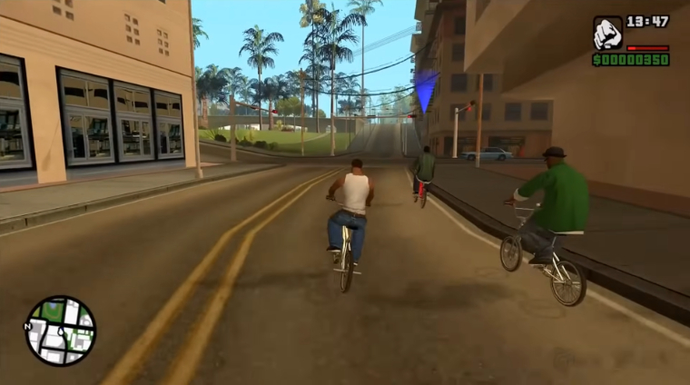
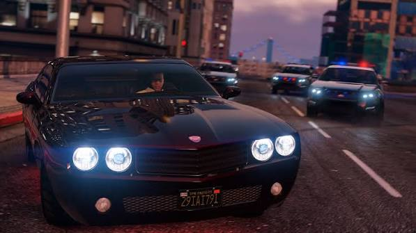

Modo Historia (Un Jugador)
Presenta narrativas cinematográficas sobre el crimen organizado, sátira social sobre el "sueño americano" y misiones de atracos, persecuciones y combates..
Videojuego de acción y aventura de tipo «Mundo Abierto»
Una saga icónica de acción y libertad total donde el crimen, la simulación urbana y la narrativa se unen en un mundo persistente.
Sitio Oficial
Presenta narrativas cinematográficas sobre el crimen organizado, sátira social sobre el "sueño americano" y misiones de atracos, persecuciones y combates..
Un mundo virtual masivo donde los jugadores crean sus propios personajes, compran propiedades, gestionan negocios criminales, completan golpes cooperativos (heists) y compiten en carreras con amigos.
Puedes interactuar con casi cualquier vehículo (coches, motos, helicópteros, aviones), usar un arsenal de armas variado y experimentar una inteligencia artificial urbana realista con transeúntes y policía.
Grand Theft Auto redefinió el género de mundo abierto al ofrecer a los jugadores una mezcla perfecta de libertad, sátira social y acción desenfrenada. Es un pilar fundamental en la cultura pop del videojuego.
Revolucionó la saga al introducir elementos de rol, personalización completa del personaje (CJ) y tres ciudades completas dentro de un solo mapa.
Uno de los juegos más vendidos de la historia, famoso por su historia con tres protagonistas intercambiables en tiempo real (Michael, Franklin y Trevor).
La vertiente multijugador que se actualiza constantemente con nuevos golpes, vehículos y negocios, manteniendo una comunidad millonaria activa.
La esperada próxima entrega ambientada en el estado de Leonida (Vice City), que promete elevar el nivel de detalle y realismo gráfico a la nueva generación.

